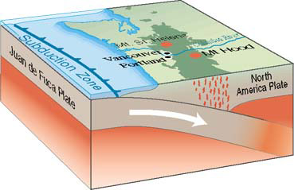
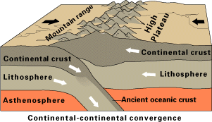

Convergent Boundaries between Tectonic Plates
Convergent boundaries where tectonic plates move toward each other generally result in the subduction of one plate into the mantle, consuming part of the lithosphere.

This is a USGS illustration. Its location is http://pubs.usgs.gov/gip/dynamic/dynamic.html
 A sudden shift at a convergent boundary can cause an earthquake and a tsunami like that of December 26, 2004. A sudden shift at a convergent boundary can cause an earthquake and a tsunami like that of December 26, 2004. |
In the case of a convergent boundary between two oceanic plates, one is usually subducted under the other, and in the process a trench is formed. "The Marianas Trench (paralleling the Mariana Islands), for example, marks where the fast-moving Pacific Plate converges against the slower moving Philippine Plate. |
The Challenger Deep, at the southern end of the Marianas Trench, plunges deeper into the Earth's interior (nearly 11,000 m) than Mount Everest, the world's tallest mountain, rises above sea level (about 8,854 m)."USGS
|  |
"The collision of India into Asia 50 million years ago caused the Eurasian Plate to crumple up and override the Indian Plate. After the collision, the slow continuous convergence of the two plates over millions of years pushed up the Himalayas and the Tibetan Plateau to their present heights. |
Most of this growth occurred during the past 10 million years. The Himalayas, towering as high as 8,854 m above sea level, form the highest continental mountains in the world. Moreover, the neighboring Tibetan Plateau, at an average elevation of about 4,600 m, is higher than all the peaks in the Alps except for Mont Blanc and Monte Rosa, and is well above the summits of most mountains in the United States."USGS
|
 USGS USGS
|
|
Index
Geophysics concepts |